Sightseeing
space needle /
seattle center
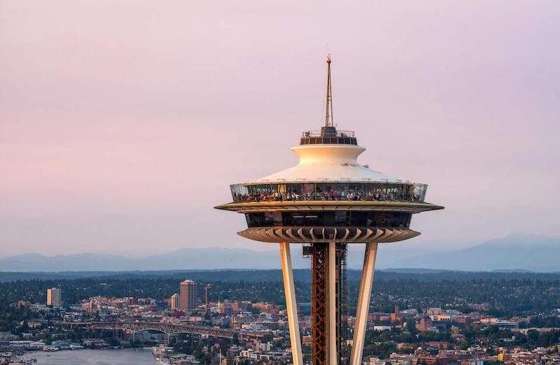
Arguably the best view of Seattle can be taken in from the iconic Space Needle. The Seattle Center is also home to other classic attractions, such as the Pacific Science Center (where they also host laser shows at the Laser Dome), Chihuly Garden and Glass, Museum of Pop Culture (MoPOP, formerly known as the EMP) and the Monorail, which won't take you very far, but it's still a fun (or maybe kind of unnerving) ride.
ballard locks /
stone gardens
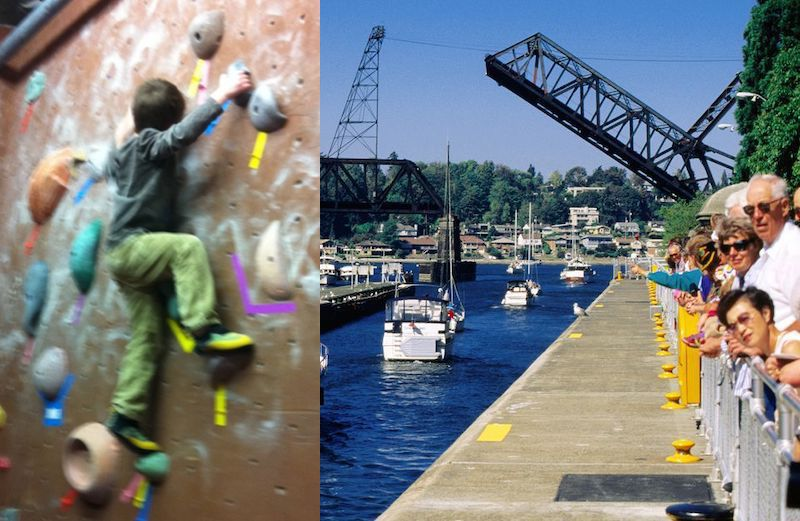
Watching the boats go back and forth through the Ballard Locks is a pretty cool sight, and you might catch the tail-end of salmon season at the fish ladder. There's also a nice botanical garden right next to the locks. Just past that is Stone Gardens, which despite the name is actually a climbing gym, with very little greenery. They have lots of bouldering, or you can top-rope or lead climb (including an outdoor wall) if you pass the requisite safety tests.
discovery park /
arboretum
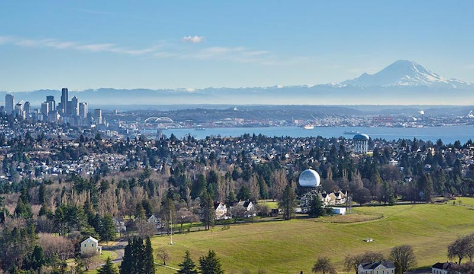
Discovery Park is a huge wild park with a beach, woods, and grassy fields. Enjoy the beautiful views of Puget Sound, The Olympics, and sometimes Mt. Rainier while walking along the top of the dunes. Another amazing park is the Washington Park Arboretum located by Lake Washington. Self-guided tours are available.
pike place
market
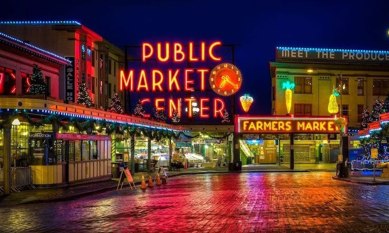
You'd have to get up on the earlier side to see them throw the fish, but even if you don't, Pike Place Market is still worth a visit. You can find just about anything in there, including food, flowers, postcards, Orna's pottery, and Ellenos yogurt (keep an eye out for free samples!). Pike Place Market is also home to the infamous Gum Wall, which is, well, a wall full of gum. Yum.
pioneer square /
underground tour
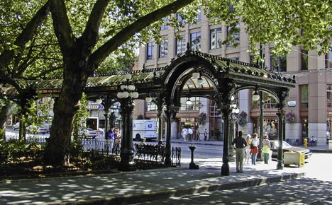
Get a dose of Seattle history while traipsing beneath the streets of downtown Seattle on the classic Underground Tour. Tours start on the hour from 10am to 6pm and are 75 minutes long. Buy tickets here or at the booth. Aboveground, the historic Pioneer Square is also interesting to walk around, with lots of galleries, cafés, and rampant income inequality.
hiking
with a view
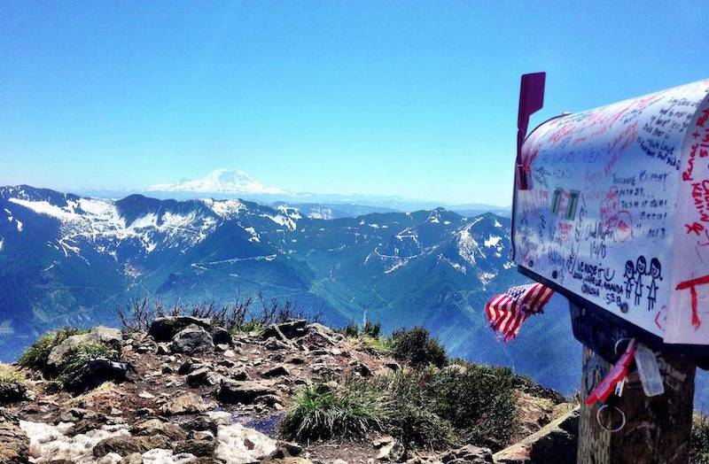
Two Seattle hiking classics are Rattlesnake Ledge and Mailbox Peak. Rattlesnake Ledge is a shorter (4 miles) but pretty steep (1,160 ft elevation gain) hike, about a 45-minute drive from Seattle. Amazing views from the top. Mailbox Peak is a longer (9.6 miles) and steeper (4,000 ft elevation gain) hike that will definitely make you work up a sweat. King County Metro's Trailhead Direct offers a shuttle to Mailbox Peak on weekends from Issaquah through 10/27.
sunday sailings
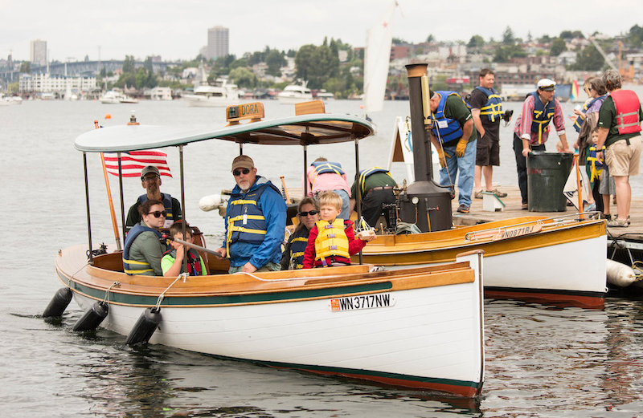The Center for Wooden Boats in South Lake Union takes the public out for free Sunday sailings on Lake Union all year round. Sign-up starts at 10 a.m., but CWB recommends getting there a little earlier to claim a spot.
axe throwing
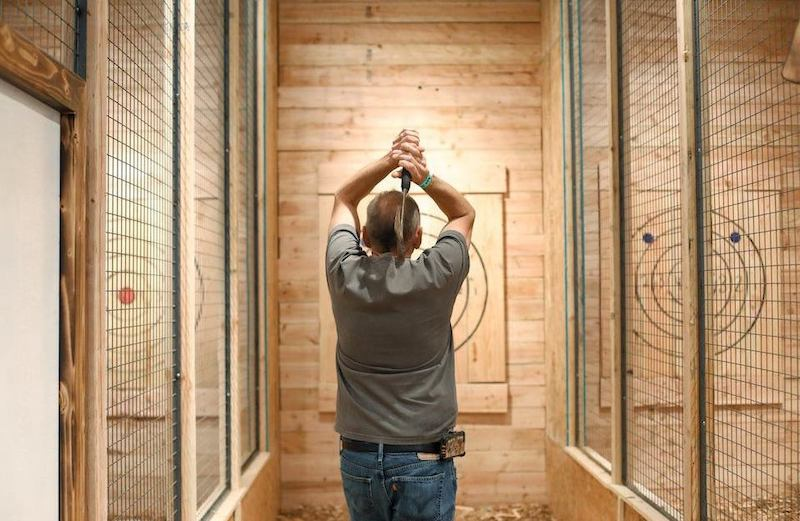In some kind of weird temporal horseshoe effect, axe throwing is really trendy now. If you check it out please let us know how it goes. Be safe. Blade & Timber is located in Seattle's Capitol Hill neighborhood, right by the lightrail station.
museums
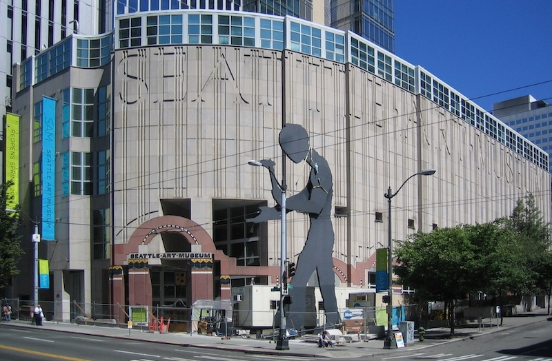There are a ton of museums in Seattle to cater to all (well, most) tastes. Seattle Art Museum, Asian Art Museum (has been closed for renovation, but should be open in the fall), Henry Art Gallery, and the Burke museum are only a few we can think of. Check out The Stranger's guide for more suggestions!
fremont troll
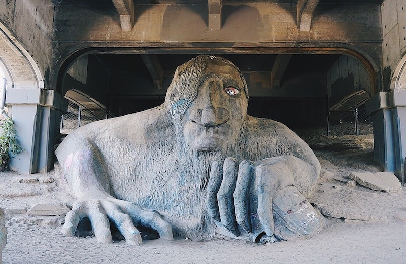If you are a billy goat gruff and/or curious about what a troll under a bridge looks like, go check out the Fremont Troll under the Aurora bridge. This massive sculpture was made in 1990 by local artists.
Coffee Shops / Bakeries
fresh flours
bakery & cafe
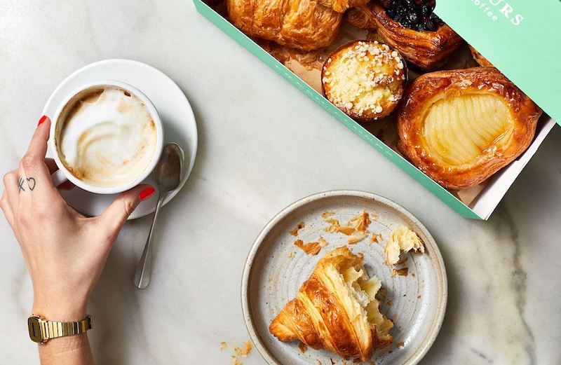
Fresh Flours has a few locations in Seattle - Phinney Ridge, Beacon Hill, West Seattle and South Lake Union. You can't really go wrong with any of their pastries, but we especially recommend the GF Double Chocolate Cookie and the Basque Cake. Also, from 4-5pm they have a happy hour, with 50% off whatever pastries are left.
sea wolf
bakers
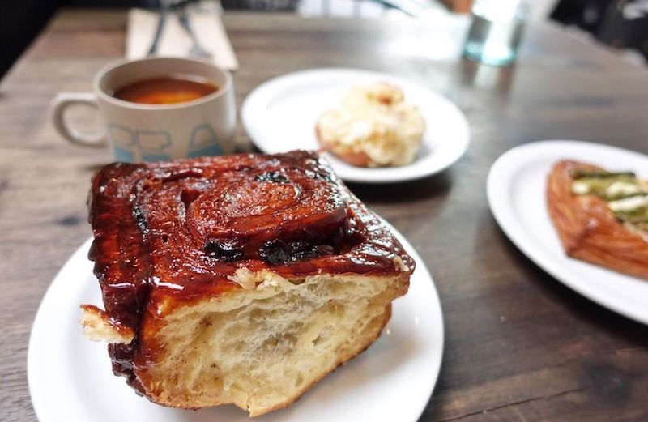
So, a cinnamon roll at Sea Wolf Bakers is $7, but when you see it, you sort of understand why. The thing is massive and can easily feed two people. Also, their breads and other pastries are very tasty and sometimes there are cute puppies waiting outside.
cafe besalu /
tall grass bakery
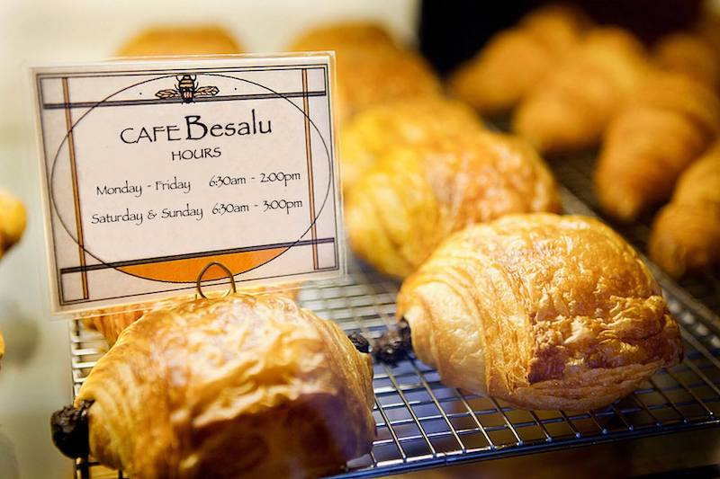
Besalu is a great pastry bakery in Ballard. For a holistic bakery-related experience, you can also go next door to Tall Grass Bakery and get delicious fresh bread.
bedlam
coffee
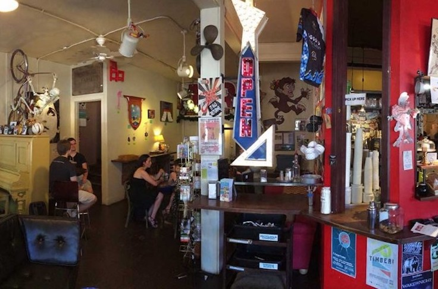
Bedlam is a cafe in Belltown (just North of downtown) that has cool art, a skeleton riding a bicycle, and a piano. They sometimes host punk shows.
cortona cafe
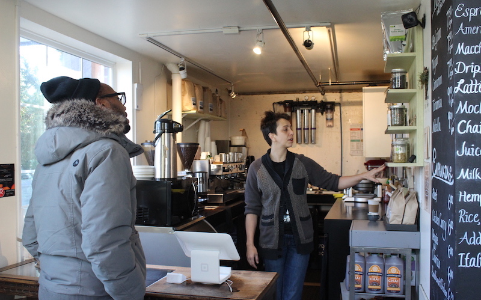Cortona Cafe is in the Central District and serves Herkimer Coffee, fresh pastries, and delicious waffles. Sit on the terrace if it's nice out or try the cozy second floor seating.
lighthouse roasters
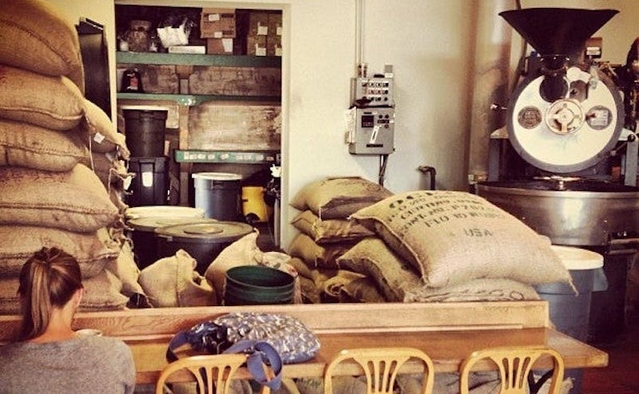Lighthouse Roasters is basically next door to our apartment! Check out the beans being roasted on-site while you sip your coffee.
a la mode pies
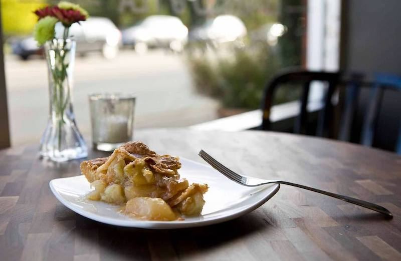You'll want to try every pie when you go into A la Mode Pies. You can pair a trip to their Phinney location with a tour of the Woodland Park Zoo.
hiroki
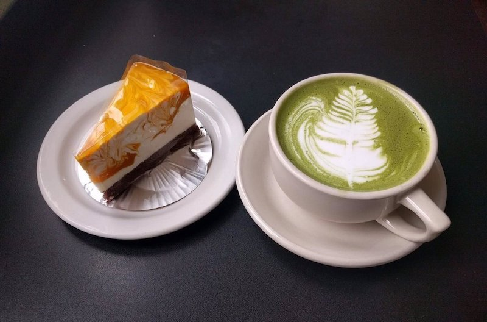Hiroki is a really tasty dessert spot in Tangletown near Greenlake. They have somewhat limited hours, but it's worth planning for. You can also stop by Mighty O's for vegan donuts or Zoka for shmancy coffee, all on the same block.
Restaurants
paseo fremont / bongos
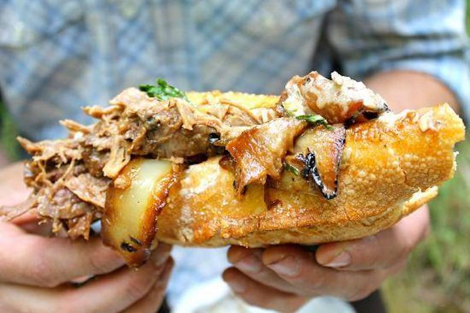If you're into greasy, amazing sandwiches, then Paseo's in Fremont is a must-stop. Load up on napkins and dive into the Caribbean deliciousness like there's no tomorrow. And if that's not enough, check out Bongos, on Aurora, by Greenlake. It's a gas station converted into a beach! They have indoor seating too. And beer!
d’ la santa
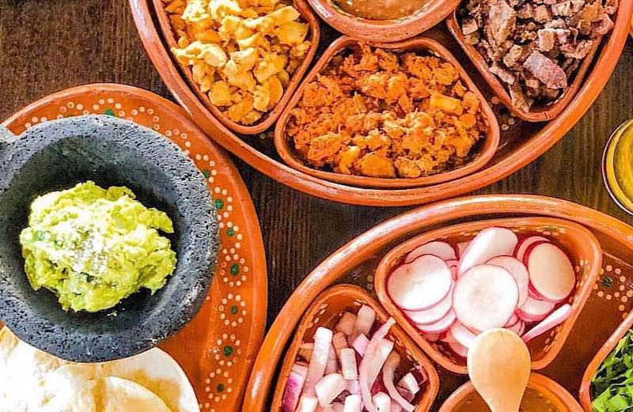Family-owned D’ La Santa is a hidden Mexican gem in the Seattle neighborhood of Eastlake. Don't miss out on their amazing sangria and margaritas!
cafe ibex
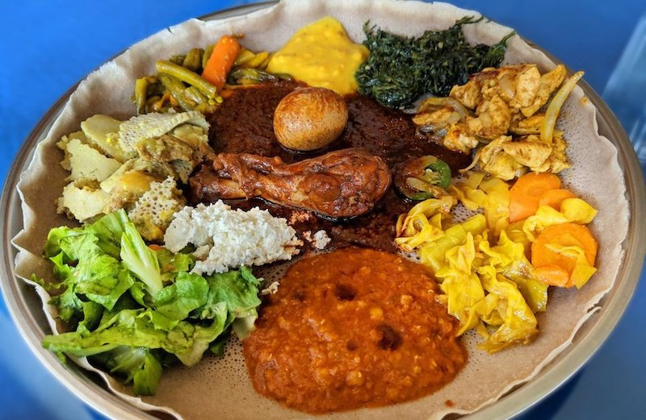Located a stone's throw away from the Mt Baker Link Light Rail station, Cafe Ibex is an Ethiopian restaurant that's well worth a visit.
thaiku / thai tom
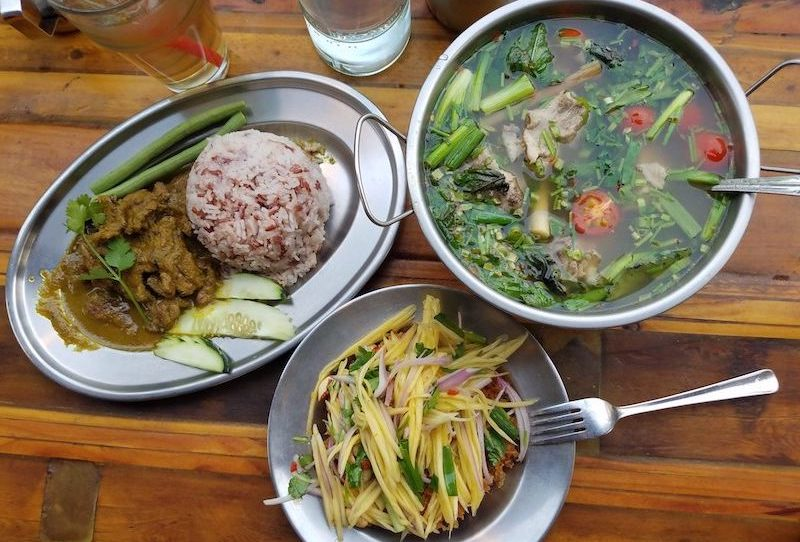There's a lot of good Thai food in Seattle. One standout is Thai Tom's, a Udistrict classic. Sometimes there's a long line, but they make large portions of delicious food and you can watch woks being fire-juggled while you wait. (Aka food cooking.) Cash only. Thaiku is another favorite. It has a wide variety of delicious Thai food and is located in Phinney Ridge.
no bones beach club
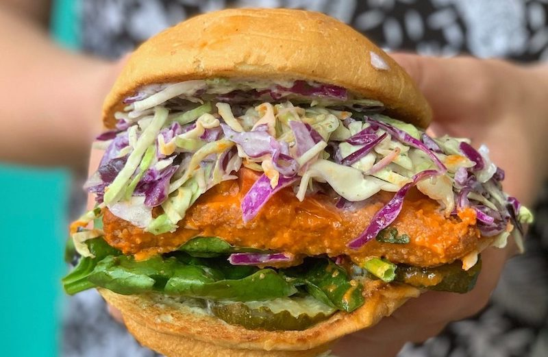If you're in Ballard, No Bones Beach Club is a fun way to get some vegan comfort food and lots of beach vibes in the middle of October.
super six
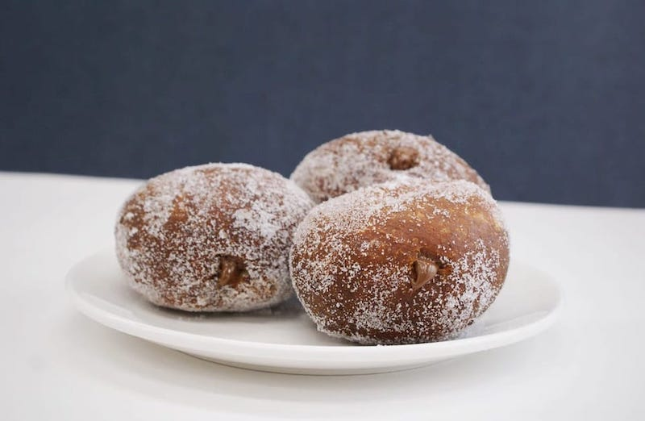Check out this Hawaiian Super Six in Columbia City (South Seattle) for an awesome brunch. Don't forget to try their malasadas (very delicious Hawaii donuts).
dumpling tzar
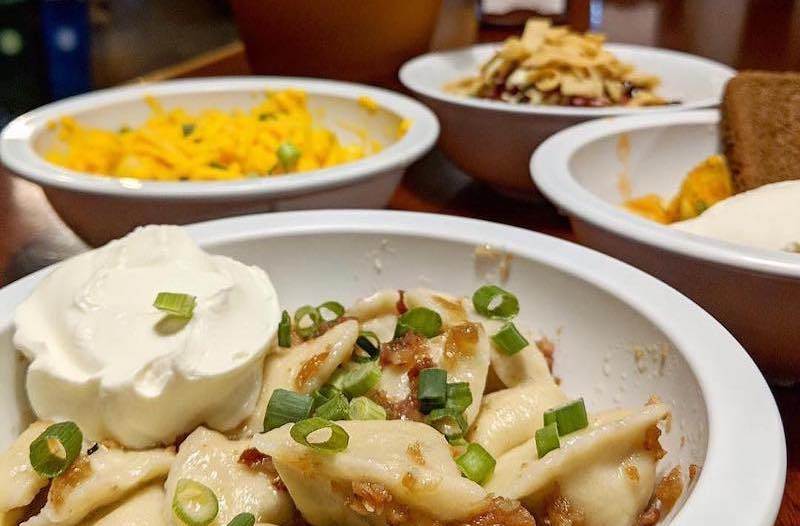Open til 2:30am every day, Dumpling Tzar is your go-to spot for a steaming bowl of Russian dumplings before you call it a night. They have a location in Fremont just down the hill from The Abbey (entrance in the alley), and one in Capitol Hill. The menu has an unintimidating 4 options for entrées (plus choice of beef or potato) and there's usually something great playing on the record player.
dough zone
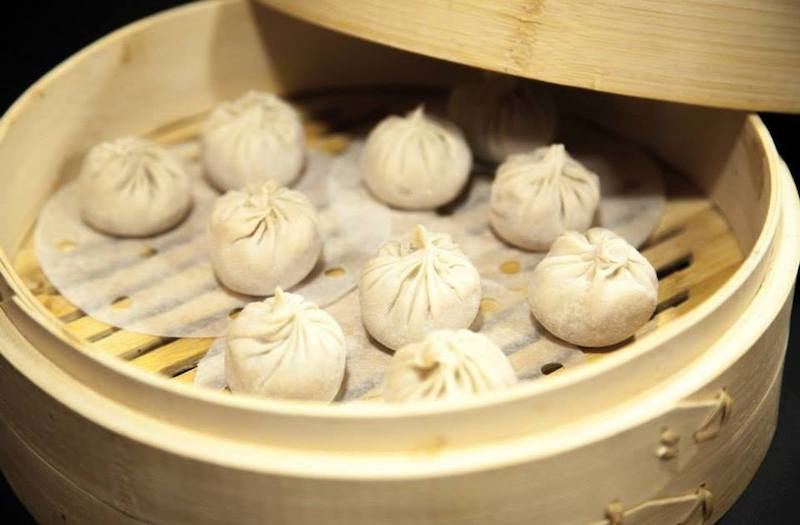Head over to Dough Zone in Seattle's International District, and expect to leave full and satisfied with a variety of dumplings. While you're there, stop by Uwajimaya, an Asian specialty supermarket with everything from food and tea to kitchenware and books.
wild ginger /
the triple door
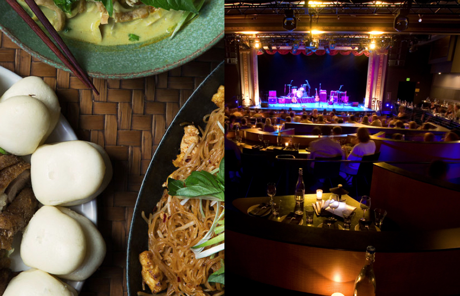
Wild Ginger is a nice Southeast Asian fusion restaurant. The downtown location sits atop The Triple Door, a dinner theater that serves food from the restaurant. The second half of October features a run of This is Halloween, a cabaret/burlesque-inspired musical rendition of Tim Burton's A Nightmare Before Christmas.
rock creek
seafood & spirits
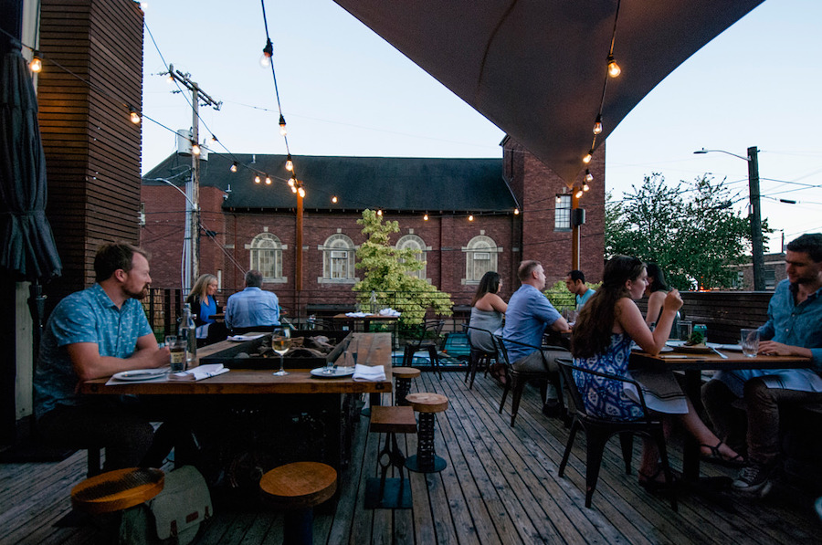
Rock Creek is a chic and delicious spot to get your fancy local fish fix. They also have good drinks and some nice vegetarian options. Be warned it can get a little loud in their trendy industrial-style space. Across the street from The Abbey (you can see it in this picture!)
kate's pub
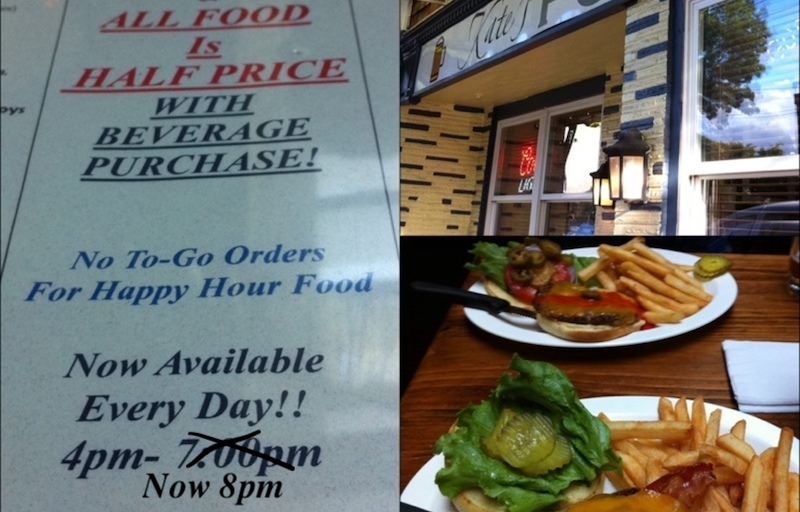Kate's is a great place for an abundance of pretty affordable food in Wallingford. Happy hour all day Sunday. For two people we recommend splitting a burger with side salad and extra side of fries. Or you do you. They have games, free pool, and darts. We have not met Kate, but the pub features portraits of many Kates on its walls. Please let us know if you identify all of them! We're a few short.
pho than brothers
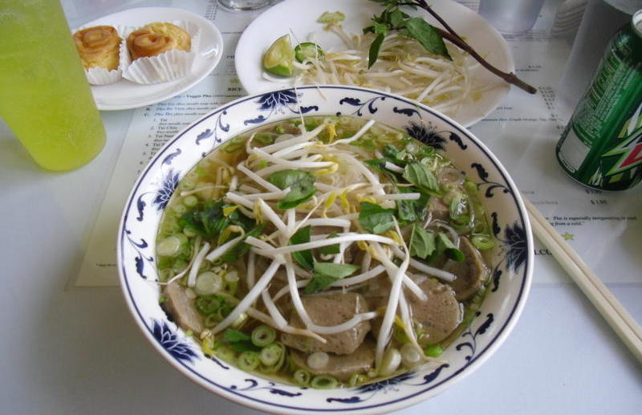For a comforting, invigorating bowl of Pho, try Pho Than Brothers at one of their many Seattle locations. They have one veggie option and several interesting meat options. A small is a good size for one person. An extra large is a good size for your baby to bathe in. Delicious and lots of bang for your buck.